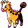

#203
Girafarig
NormalPsychic
Abilities: Inner Focus, Contrary, Sap Sipper
Base stats BST 455
HP70
Attack80
Defense65
Speed85
Sp. Atk90
Sp. Def65
Evolution
dbbw EVOLVE_LEVEL, 32, FARIGIRAFLevel-up learnset
LevelMoveType
Lv. 1GrowlNormal
Lv. 1TackleNormal
Lv. 1AstonishGhost
Lv. 1ConfusionPsychic
Lv. 12StompNormal
Lv. 15PsybeamPsychic
Lv. 21AgilityPsychic
Lv. 27Zen HeadbuttPsychic
Lv. 33CrunchDark
Lv. 36Psychic M—
Lv. 39Baton PassNormal
Lv. 42Hyper VoiceNormal
Lv. 45Nasty PlotDark